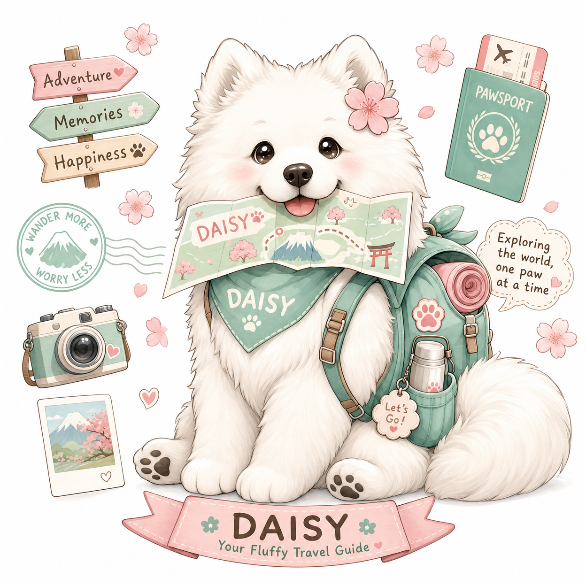

🗺️ Daisyのおすすめコース
大型犬目線で選んだ、九州犬連れ旅行の厳選プランです。
Googleマップでそのままルート案内できます！
ℹ️ 営業時間・料金は変更になる場合があります。お出かけ前に必ず公式サイトでご確認ください。
大分1泊2日
♨️ 湯布院・くじゅう 犬連れ温泉旅
湯布院の街歩き → くじゅう草原ドッグラン → 温泉宿でゆったり。大型犬も大満足の王道大分コース。
📅 1日目
出
出発
福岡・北九州方面を出発
大分道を利用。由布院ICで降りて湯布院へ。
由布院ICから約5分
1
10:00〜12:00
由布院 湯の坪街道 散策
リード着用でOKの湯布院メインストリート。お土産屋さんや雑貨店を犬連れでのんびり散策。
🕐 終日💴 無料
車で約5分
2
12:00〜13:30
森のドッグラン 枝瑠風
湯布院の自然の中にある広々ドッグラン。芝生が綺麗で大型犬も思いっきり走れる。ランチ後の運動に最適。
🕐 10:00〜17:00💴 1頭600円〜
やまなみハイウェイ経由 約40分
3
14:30〜16:30
NU:KUJU（ヌークジュ）
日本最大規模の草原ドッグラン！くじゅう連山を望む絶景の中で、Daisyも大興奮。レストランも犬同伴OK。
🕐 9:00〜17:00💴 入場料別途
車で約15分
4
17:00〜
九重・湯布院エリアのペット可宿でチェックイン
大型犬OKの温泉宿でゆっくり。愛犬と一緒に温泉旅を満喫。
🏨 楽天トラベルで大型犬OK宿を検索
📅 2日目
5
9:00〜11:00
くじゅう連山 牧ノ戸峠ルート
標高1,330mの牧ノ戸峠から出発する犬連れ登山。展望台まで往復1時間程度で絶景が楽しめる。
🕐 終日💴 無料🐕 リード必須
大分道経由 約1時間
6
12:30〜14:00
森のドッグラン ワンLOVE
大分市内から近い人気ドッグラン。帰り道に立ち寄って最後の運動を。カフェ併設で休憩も◎。
🕐 9:00〜17:00💴 1頭700円
帰
14:00〜
大分道で帰路へ
別府湾SAのドッグランで最後の休憩を忘れずに。
福岡日帰り
🌸 福岡市内 犬連れ1日コース
海の中道の広大なドッグラン → 糸島の絶景スポット。福岡在住・近郊の方に最適な日帰りプラン。
出
9:00
福岡市内を出発
海の中道海浜公園へ向かう。西戸崎駅周辺に駐車場あり。
福岡市内から約30分
1
9:30〜12:00
海の中道海浜公園 ドッグラン
福岡最大級のドッグラン。フリーエリア・小型犬エリア・くつろぎエリアの3エリア構成。広い芝生で大型犬も大満足。
🕐 9:30〜17:00💴 入園料 大人450円（犬は無料）
都市高速・西九州道経由 約50分
2
13:00〜14:30
糸島 二見ヶ浦・夫婦岩
インスタ映えスポットとして有名な糸島の夫婦岩。海岸沿いを犬連れで散歩できる。夕日の時間帯も絶景。
🕐 終日💴 無料
車で約10分
3
14:30〜16:00
FARM RESORT ITOSHIMA
糸島の農場リゾート。ドッグランで最後の運動を。テラス席でランチ・カフェも楽しめる。
🕐 10:00〜17:00💴 ドッグラン利用料あり
帰
16:00〜
福岡市内へ帰路
西九州道・都市高速で福岡市内へ。約40分。
熊本日帰り
🏯 阿蘇・熊本 大自然コース
草千里の絶景散歩 → 熊本市内のドッグカフェでランチ。阿蘇の雄大な自然を愛犬と満喫する日帰りプラン。
出
8:00
熊本市内・福岡方面を出発
阿蘇くじゅう国立公園へ。九州道・熊本ICから阿蘇方面へ約1時間。
熊本ICから約1時間
1
9:30〜11:30
阿蘇くじゅう国立公園 草千里ヶ浜
標高1,000mの草原に広がる絶景。馬と一緒に散歩できる大草原。リード着用でOK。阿蘇中岳を背景に最高の写真が撮れる。
🕐 終日💴 無料（駐車場有料）🐕 リード必須
阿蘇市内経由 約1時間
2
13:00〜14:30
DOG RUN & CAFE Teo One
熊本市内のドッグカフェ＆ドッグラン。美味しいランチを食べながら、愛犬もドッグランで遊べる。大型犬も歓迎。
🕐 11:00〜18:00💴 ドッグラン利用料あり
車で約10分
3
15:00〜16:30
くまもとドッグラン もりのみやこ
熊本市内の天然芝ドッグラン。アジリティー遊具もあり、最後の運動に最適。
🕐 9:00〜17:00💴 1頭500円〜
帰
17:00〜
帰路へ
九州道で福岡・熊本市内へ。古賀SAや広川SAのドッグランで休憩も◎。
鹿児島日帰り
🌋 桜島・霧島 犬連れ絶景コース
桜島の溶岩なぎさ公園 → 霧島神宮 → 指宿の長崎鼻。鹿児島の大自然を犬連れで満喫するコース。
出
8:30
鹿児島市内を出発
フェリーで桜島へ渡る（約15分）。または溶岩なぎさ公園へ直接ドライブ。
1
9:30〜11:00
桜島 溶岩なぎさ公園
桜島の溶岩が広がる海岸沿いの公園。犬連れ散歩OK。桜島を間近に見ながら溶岩遊歩道を歩く絶景コース。
🕐 終日💴 無料🐕 リード必須
九州道経由 約1時間
2
12:30〜14:00
霧島神宮 周辺散策
荘厳な霧島神宮の参道を犬連れ散策。境内は一部ペット不可のエリアあり。周辺の自然道は犬連れOK。
🕐 終日💴 無料🐕 リード必須・境内一部不可
指宿スカイライン経由 約1時間
3
15:30〜17:00
指宿 長崎鼻 散策
薩摩半島最南端の岬。開聞岳を望む絶景スポット。犬連れ散歩OKで、夕日の時間帯は特に美しい。
🕐 終日💴 無料
帰
17:00〜
鹿児島市内へ帰路
指宿スカイラインで約1時間。
🗺️ 自分だけのコースを作ろう！
スポット一覧から行きたい場所を複数選ぶと、
Googleマップでルート案内 + 旅のしおりが自動で作れます。
印刷してお出かけのお供に！